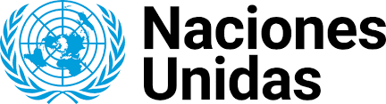

Los Problemas Sociales, de Salud, Económicos y Ecológicos Según la ONU

Introducción
El mundo enfrenta diversos desafíos que afectan la calidad de vida de millones de personas. La Organización de las Naciones Unidas (ONU) ha identificado y analizado los principales problemas sociales, de salud, económicos y ecológicos, con el objetivo de proponer soluciones sostenibles y equitativas. Desde la pobreza y la desigualdad hasta el cambio climático y las crisis sanitarias, estos problemas están interconectados y requieren esfuerzos globales para ser abordados de manera efectiva. En este ensayo, se analizarán estos cuatro ámbitos, su impacto en la sociedad y las estrategias que la ONU propone para enfrentarlos.
Problemas Sociales
Uno de los principales problemas sociales identificados por la ONU es la desigualdad, tanto económica como de género, educación y oportunidades. Según el informe sobre los Objetivos de Desarrollo Sostenible (ODS), más de 700 millones de personas viven en pobreza extrema, lo que impide su acceso a derechos básicos como la educación y la salud. Además, la discriminación de género sigue siendo un obstáculo para el desarrollo de muchas sociedades. La ONU trabaja en la promoción de la igualdad mediante iniciativas como el ODS 5, que busca la equidad de género, y el ODS 10, que pretende reducir las desigualdades dentro y entre los países.
Problemas de Salud
La salud global es otro de los grandes desafíos que enfrenta la humanidad. Enfermedades como el VIH/SIDA, la tuberculosis y la malaria siguen siendo amenazas en diversas regiones del mundo, mientras que el acceso a servicios médicos sigue siendo insuficiente en muchas comunidades. Además, la pandemia de COVID-19 demostró la fragilidad de los sistemas de salud y la necesidad de una cooperación internacional en la lucha contra enfermedades emergentes. La ONU, a través de la Organización Mundial de la Salud (OMS), promueve el acceso universal a la salud mediante estrategias de prevención, vacunación y fortalecimiento de los sistemas sanitarios.
Problemas Económicos
Las crisis económicas afectan el bienestar de millones de personas y pueden desencadenar efectos negativos en múltiples sectores. La ONU señala que la falta de empleo digno, la inflación y la deuda externa son problemas que obstaculizan el desarrollo sostenible. La pandemia de COVID-19 agravó estos problemas, aumentando el desempleo y la desigualdad. Para enfrentar estos desafíos, la ONU impulsa el ODS 8, que busca promover el crecimiento económico inclusivo y el empleo digno para todos. También fomenta la cooperación internacional para aliviar la deuda de los países en desarrollo y estimular economías más resilientes.
Problemas Ecológicos
El cambio climático es uno de los mayores retos de nuestra era. La ONU ha advertido sobre los efectos devastadores del calentamiento global, la deforestación, la contaminación del agua y del aire, y la pérdida de biodiversidad. Fenómenos como el aumento del nivel del mar y los desastres naturales cada vez más intensos ponen en riesgo la vida de millones de personas. El Acuerdo de París, promovido por la ONU, busca reducir las emisiones de gases de efecto invernadero y fomentar la sostenibilidad ambiental a través del ODS 13, que se enfoca en la acción climática.
Conclusión
Los problemas sociales, de salud, económicos y ecológicos son desafíos interconectados que requieren una respuesta global y coordinada. La ONU desempeña un papel clave en la identificación de estas problemáticas y en la promoción de soluciones a través de los Objetivos de Desarrollo Sostenible. Sin embargo, para lograr un mundo más justo y sostenible, es fundamental que los gobiernos, las empresas y la sociedad civil trabajen juntos en la implementación de políticas y acciones concretas. Solo a través de un esfuerzo colectivo podremos garantizar un futuro más equitativo y saludable para las próximas generaciones.
Bibliografía
Naciones Unidas. (2023). Informe sobre los Objetivos de Desarrollo Sostenible. Recuperado de www.un.org
Organización Mundial de la Salud. (2022). Informe sobre la salud en el mundo. Recuperado de www.who.int
Programa de las Naciones Unidas para el Medio Ambiente. (2023). Estado del medio ambiente global. Recuperado de www.unep.org
Visitar la pagina oficial de la ONU en español
Ir a la pagina